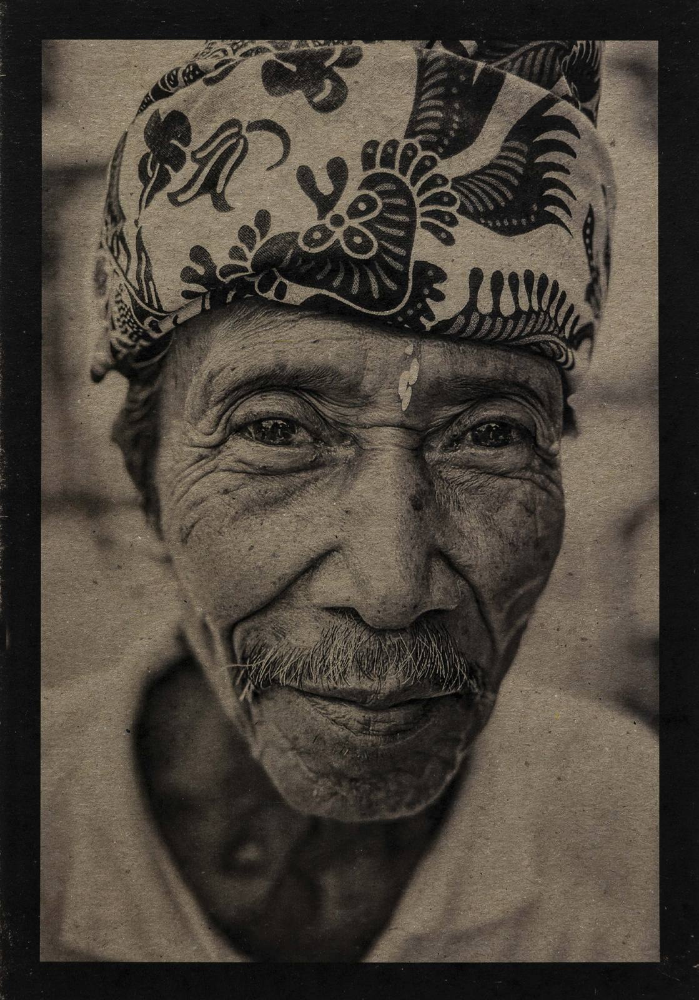

La belleza serena
de lo sencillo.
A través de la fotografía exploro la relación entre luz, emoción y memoria, creando imágenes de carácter poético y atemporal.
Ver Portfolio

Bali — Tierra y Ofrenda


“No fotografío lo extraordinario. Fotografío aquello que solemos pasar por alto.”